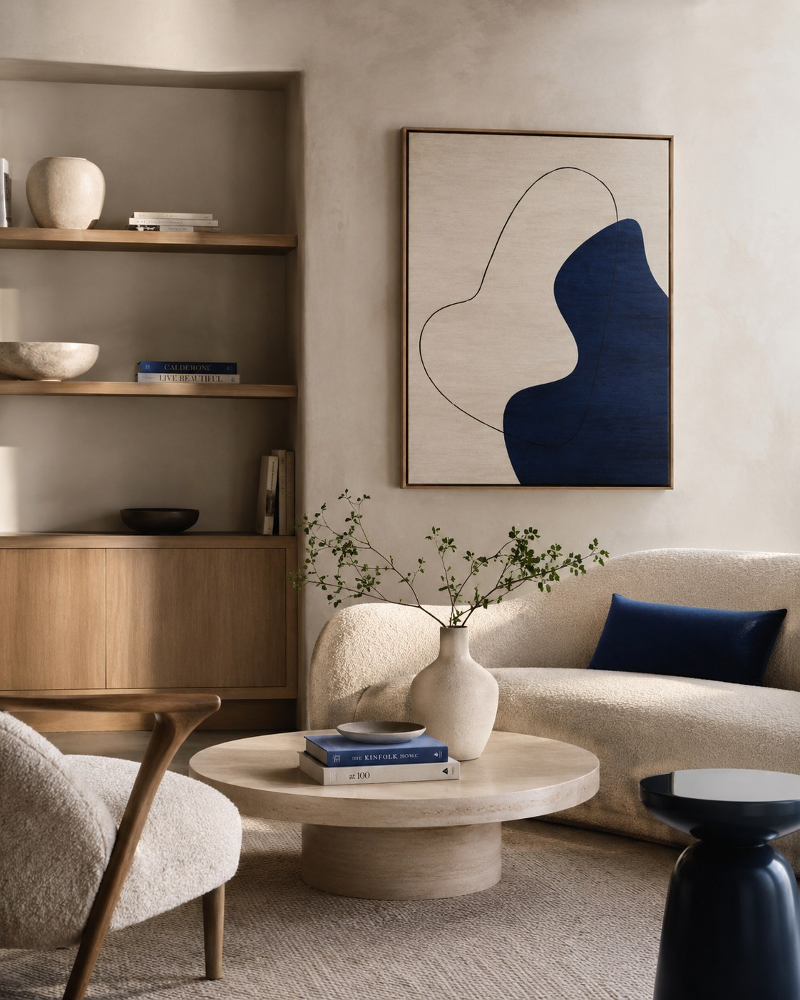

Poznajemy potrzeby, codzienność i priorytety.

To Oni Projektują / Gliwice
Projektujemy wnętrza, które działają.


Dwie perspektywyJedna spójna wizja.
O nas
Projekt zaczyna się od rozmowy, nie od gotowego stylu.
To Oni Projektują to pracownia architektury wnętrz z Gliwic. Łączymy funkcjonalność, spokojną estetykę i decyzje dopasowane do prawdziwego sposobu życia.
Pracujemy z wnętrzami prywatnymi, komercyjnymi i przestrzeniami wspólnymi. Każde miejsce analizujemy osobno — jego światło, proporcje, ograniczenia i możliwości.
Prowadzimy inwestycję od pierwszej analizy po dokumentację wykonawczą i nadzór. Dzięki temu kolejne decyzje wynikają z poprzednich, zamiast pojawiać się przypadkowo.
Budujemy układ, który naprawdę działa.
Materiał, światło i detal domykają całość.
Sposób myślenia
Estetyka jest efektem dobrze podjętych decyzji.
Nie projektujemy dla samego obrazu. Projektujemy przestrzeń, która ma dobrze działać dziś i za kilka lat.
Najpierw układ.
Komunikacja, przechowywanie i codzienne czynności wyznaczają punkt wyjścia.
Potem atmosfera.
Światło naturalne i sztuczne porządkuje rytm wnętrza oraz sposób odbioru materiałów.
Następnie charakter.
Kolor, faktura i proporcja tworzą spójność bez nadmiaru dekoracji.
Na końcu precyzja.
To ona decyduje, czy projekt wygląda dobrze również po zrealizowaniu.

Wnętrza prywatneSpokój, który wynika z proporcji.
Wybrane projekty
Każde wnętrze ma własny rytm.
Galeria przesuwa się automatycznie. Najedź kursorem, aby ją zatrzymać, albo użyj strzałek.
Projekt wnętrza
Garderoba na wymiar
Projekt koncepcyjny
Łazienka / detal
Projekt kompleksowy
Strefa dzienna
Projekt wnętrza
Sypialnia i wyciszenie
Projekt wykonawczy
Spokojna łazienka
Projekt wnętrza
Kuchnia / codzienność
Od pomysłu do dokumentacji
Projekt to więcej niż wizualizacja.
Za spokojnym obrazem gotowego wnętrza stoi zestaw decyzji, rysunków i materiałów, które prowadzą inwestycję do realizacji.
Układ funkcjonalny
Warianty rozmieszczenia funkcji i komunikacji.
Koncepcja materiałowa
Paleta, faktury, wyposażenie i kierunek estetyczny.
Dokumentacja techniczna
Rysunki oraz informacje potrzebne wykonawcom.
Wsparcie realizacji
Wyjaśnienia, konsultacje i kontrola spójności projektu.


Zakres współpracy
Dopasowany do etapu inwestycji.
Zakres można rozszerzać i łączyć w zależności od potrzeb projektu.
Konsultacja projektowa
Spotkanie poświęcone przestrzeni, kierunkowi i najważniejszym decyzjom.
- analiza potrzeb
- wstępny kierunek
- rekomendacje
Projekt funkcjonalny
Układ pomieszczeń, komunikacja i rozwiązania porządkujące codzienność.
- inwentaryzacja
- warianty układu
- wybór rozwiązania
Projekt kompleksowy
Pełne opracowanie wnętrza od koncepcji po dokumentację wykonawczą.
- układ i koncepcja
- materiały i wyposażenie
- dokumentacja
Nadzór autorski
Wsparcie podczas realizacji i kontakt przy decyzjach wykonawczych.
- wizyty na miejscu
- konsultacje zmian
- kontrola zgodności
Proces inwestycji
Wybierz etap i zobacz, co dzieje się w jego trakcie.
Każdy krok ma konkretny cel, zestaw działań i rezultat. Kliknij lub najedź na wybrany etap.
Etap / Analiza
Analiza lokalu
Poznajemy miejsce, sposób jego użytkowania oraz oczekiwania inwestora. Ustalamy priorytety i ograniczenia, które będą wpływać na cały projekt.
- rozmowa o potrzebach
- analiza możliwości lokalu
- ustalenie zakresu
Rezultat etapuJasny kierunek dalszej pracy i zakres projektu.
Obszary projektowe
Od pojedynczego pomieszczenia po większą całość.

Wnętrza prywatne
Mieszkania i domy
Pełne projekty, pojedyncze pomieszczenia i zmiany funkcjonalne.
Wnętrza komercyjne
Miejsca pracy i usług
Przestrzenie budujące wygodę użytkownika i charakter marki.
Przestrzenie wspólne
Układ, który łączy ludzi
Koncepcje podporządkowane codziennemu użytkowaniu i trwałości.
Najczęstsze pytania
Zanim zaczniemy.
Krótko o współpracy, materiałach i pierwszych krokach.
Od czego zaczyna się współpraca?+
Od rozmowy o miejscu, potrzebach, budżecie i planowanym terminie. Na tej podstawie dobieramy właściwy zakres projektu.
Czy realizujecie projekty poza Gliwicami?+
Tak. Zakres i sposób współpracy ustalamy indywidualnie. Część spotkań i konsultacji może odbywać się również zdalnie.
Jakie materiały warto przygotować?+
Rzut lokalu, zdjęcia stanu obecnego, orientacyjny metraż, termin oraz przykłady wnętrz, które pomagają opisać oczekiwania.
Czy można zacząć od konsultacji?+
Tak. Konsultacja pozwala uporządkować decyzje i ocenić, czy potrzebny jest pełny projekt, wybrany etap czy jedynie wsparcie w konkretnym zakresie.
Kontakt
Opowiedz nam o przestrzeni, którą chcesz zmienić.
Na początek wystarczy lokalizacja, metraż, planowany termin i krótki opis inwestycji.
Telefon794 530 590
E-mailtooniprojektuja@gmail.com
Instagram@to_oni_projektuja
PracowniaGliwice, 44-100
Warto przygotować
- lokalizację i metraż
- planowany termin
- krótki opis potrzeb
PracowniaGliwice / Śląsk
Spotkania po wcześniejszym umówieniu.